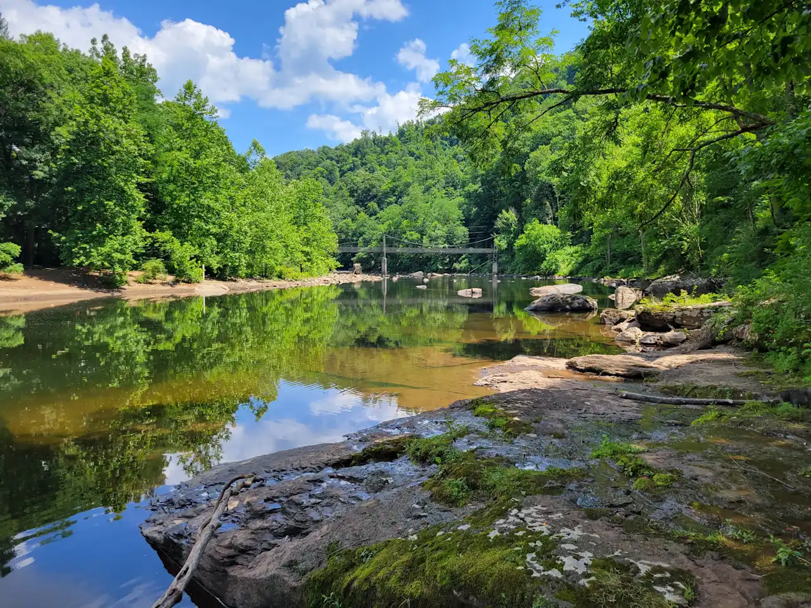
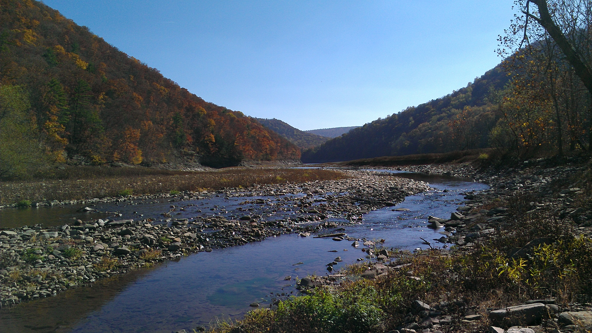
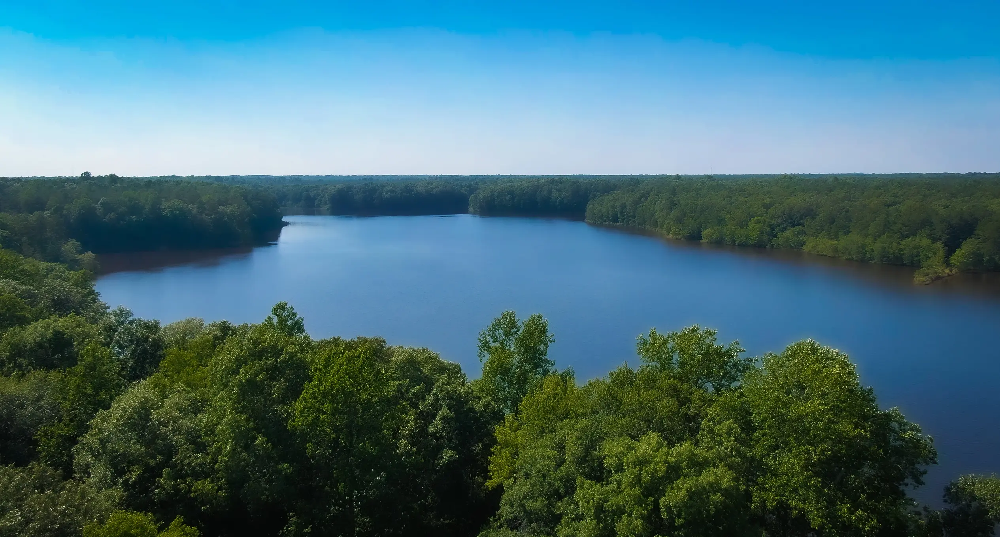
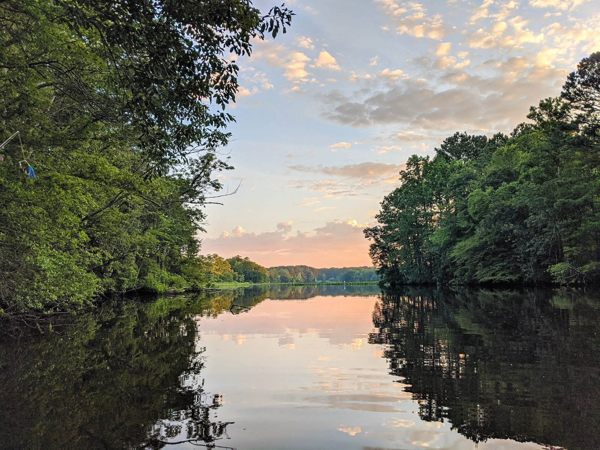

Top-Rated Hunting Spots
Dan's Mountain WMA
Located in Allegany County. Offers rugged terrain and hunting for deer and black bear.
Savage River State Forest
Garrett County. Known for turkey hunting and rugged, mountainous terrain with rolling hills and steep slopes.
St. Mary's River State Park
St. Mary's County. Ideal for white-tailed deer with diverse terrain.
Pocomoke River State Forest
Worcester County. Largest public hunting area on the lower Eastern Shore.
Susquehanna State Park
Harford County. Offers deer archery hunting and limited waterfowl areas.